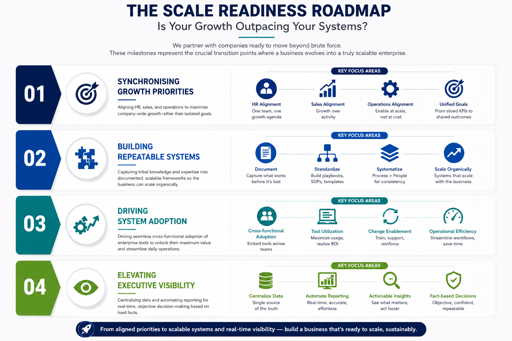
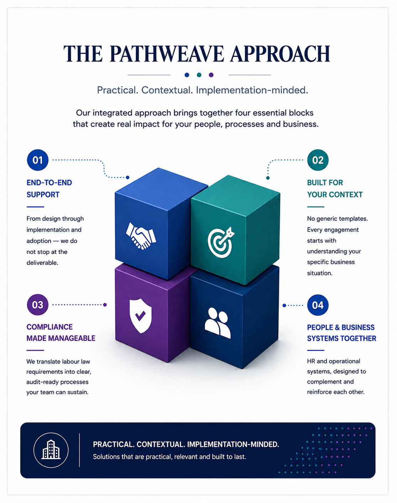

“Scale is about breaking less.”
Organizations reach growth ceilings not due to product failure, but due to internal systemic friction. What worked for your first phase of growth will not sustain your next. PathWeave replaces individual heroics with engineered precision.
We deploy the PW-3 Framework—engineered specifically for the mid-market—across your people, revenue, and technology stacks to create an enduring, scalable architecture.
The PathWeave Operating System is the operational architecture that enables ambitious organisations to scale with clarity, discipline, and intelligent systems.
Is Your Growth Outpacing Your Systems?

Synchronising Growth Priorities
Aligning HR, sales, and operations to maximize company-wide growth rather than isolated goals.
Building Repeatable Systems
Capturing tribal knowledge and expertise into documented, scalable frameworks so the business can scale organically.
Driving System Adoption
Driving seamless cross-functional adoption of enterprise tools to unlock their maximum value and streamline daily operations.
Elevating Executive Visibility
Centralizing data and automating reporting for real-time, objective decision-making based on hard facts.
Three Frameworks. One Instrument. Every Time.
Every layer of the PathWeave method—diagnosis, systems, technology—runs on the same architecture: three interlocking frameworks, built into one named instrument. This is not advice delivered ad hoc. It is a repeatable operating system, applied in the same disciplined sequence for every client, every time.
“Sutra tells you what’s frayed. Tantra tells you how it should be rebuilt. Yantra keeps it running. Three frameworks, every time. That’s the PathWeave Operating System.”
One system. Three interlocking layers.
HR Systems & Operations.
Powered by PeopleOS™
Your HR backbone, built to hold. Every growing business needs HR that works quietly and reliably in the background—not one that creates friction.
HR Setup & Employee Lifecycle
We build your complete HR foundation—from targeted hiring and onboarding to compliance, payroll coordination, and offboarding.
Culture & Leadership
We help managers lead effectively and align your entire team around clear company values, ensuring your culture stays strong as your headcount grows.
Targeted Capability Building
We skip the generic seminars. We deliver hands-on training for HR, managers, and teams that actually improves how they work day-to-day.
HR Setup & Employee Lifecycle
The backbone of every well-run business — built precisely and maintained with discipline. From the day an employee joins to the day they leave, every touchpoint and process must be handled correctly.
What We Cover- HR setup from the ground up
- Onboarding and induction
- Payroll coordination support
- Employee relations and grievance
- HRMS setup and support
- Statutory compliance advisory
- POSH framework and committee readiness
- Employee lifecycle design
- Employee records and documentation
- Third-party payroll services management
- Exit and offboarding processes
- Background verification support
- Recruitment process support
- Attendance and leave management
- Performance management systems
- HR audits and process reviews
- Compliance coordination
Culture & Leadership
Structure alone does not build great organisations. Culture is reflected in everyday decisions, behaviours, and interactions. We help leadership teams articulate what they stand for and align around a shared direction.
What We Cover- Mission, vision, and values workshops
- Manager role clarity
- Communication rhythm setup
- Organisation development support
- Culture design and articulation
- Employee experience design
- Team alignment interventions
- Leadership alignment sessions
- Engagement strategy
- Change management support
Targeted Capability Building
Systems deliver results only when the people responsible for them have the capability and confidence to use them effectively. Our sessions are contextual, not generic, and are designed to improve day-to-day behaviour.
What We Cover- POSH training
- Interviewer training
- Policy awareness sessions
- Custom HR workshops
- HR professional training
- Onboarding training
- Employee communication training
- Manager training
- Performance review training
- Workplace conduct training
PeopleOSBlueprint™
A structured diagnostic for businesses where people growth is outpacing people systems. It reveals where HR, compliance, manager capability, and employee lifecycle design are beginning to crack under scale.
Inside the blueprint, you'll uncover:
- • Where your people operations are still founder-dependent.
- • Which HR, compliance, and manager gaps are quietly creating risk.
- • What must be fixed first to build a dependable people backbone.
“Create a dependable, compliant HR backbone that aligns leadership and allows founders to focus entirely on growth.”
Business Systems.
Powered by ScaleOS™
Direction, before everything else. We build a sharper, more disciplined engine with predictable conversion and friction-free workflows.
Unifying Strategic Direction
Translating your vision into a blueprint for scale. We align your strategic goals with the exact technology, operational processes, and market positioning needed.
Sales & Revenue Engines
Architecting predictable revenue growth. We design your Go-To-Market strategy, optimize sales territories, and establish high-performance sales rhythms.
Process Optimisation
Creating seamless collaboration across departments. We design highly efficient cross-functional workflows and introduce smart automation.
Unifying Strategic Direction
Translating your vision into a blueprint for scale. We align your strategic goals with the exact technology, operational processes, and market positioning needed.
What We Cover- Digital & Tech roadmaps
- Market positioning & benchmarking
- Technology maturity assessment
- Value chain analysis
- Stakeholder management
- Transition handholding
- Systems design & interaction mapping
- Diversification & feasibility analysis
- Trend analysis
- Buying behaviour analysis
- Communication planning
Sales & Revenue Engines
Architecting predictable revenue growth. We design your Go-To-Market strategy, optimize sales territories, and establish high-performance sales rhythms.
What We Cover- Go-to-Market & territory mapping
- Sales process & discipline redesign
- Sales training and onboarding
- Incentive & commission plan alignment
- Sales capability & playbook creation
- Sales performance rhythms
Process Optimisation
Creating seamless collaboration across departments. We design highly efficient cross-functional workflows and introduce smart automation.
What We Cover- Cross-functional process re-engineering
- Smart automation & integrations
- Business process documentation
- Cross-application integrations
- Workflow mapping & documentation
- Reporting & review cadence setup
- Microsoft Office automation
- Process improvement initiatives
ScaleOSBlueprint™
A business systems diagnostic for companies facing growth friction, execution drag, or revenue inconsistency. It surfaces where strategy, sales discipline, workflows, and cross-functional operating rhythms are breaking down.
Inside the blueprint, you'll uncover:
- • Where growth is slowing because execution is not systemized.
- • Which workflow and handoff gaps are hurting speed and predictability.
- • What needs to be rebuilt to create a sharper engine for scale.
“Strengthen business adaptability, build a sharper sales engine, and drastically reduce workflow bottlenecks.”
Data & AI Enablement.
Powered by TechOS™
The technical infrastructure. Ensure your technology supports visibility, turning raw data into actionable insights for faster, smarter execution.
Maximizing Tech Utilization
We help you pick the right software, set it up, and drive seamless workflow adoption so your budget translates into actual daily utilization.
Real-Time Executive Dashboards
We replace manual spreadsheets with live, automated dashboards that give you an instant, accurate picture of your pipeline and operations.
Practical AI & Decision Support
We implement the right tech layer to organise your business data and spot hidden trends, allowing you to run your company based on hard facts.
Maximizing Tech Utilization
We help you pick the right software, set it up, and drive seamless workflow adoption so your budget translates into actual daily utilization.
What We Cover- Software evaluation and vendor shortlist
- Implementation and rollout support
- Workflow mapping and automation design
- Team training and adoption coaching
- License audit and utilization improvement
- Change management and SOP creation
Real-Time Executive Dashboards
We replace manual spreadsheets with live, automated dashboards that give you an instant, accurate picture of your pipeline and operations.
What We Cover- KPI framework design
- Dashboard development in Power BI, Tableau, Looker, or Excel
- Data integration and refresh automation
- Executive scorecards and operating reviews
- Pipeline, revenue, operations, and workforce dashboards
- Ongoing dashboard governance and reporting QA
Practical AI & Decision Support
We implement the right tech layer to organise your business data and spot hidden trends, allowing you to run your company based on hard facts.
What We Cover- AI readiness assessment
- Use-case prioritization workshop
- Data cleanup and structuring for AI
- Forecasting and anomaly detection
- Internal knowledge assistants and search tools
- Decision support for hiring, sales, finance, or operations
TechOSBlueprint™
A technology and data diagnostic for companies running on fragmented tools, manual reporting, and weak visibility. It identifies where your tech stack, dashboards, automation, and AI readiness are falling short of what scale now demands.
Inside the blueprint, you'll uncover:
- • Where your current systems are creating visibility gaps.
- • Which tools, data flows, and reports are limiting decision speed.
- • What technical layer needs to be built for real-time execution clarity.
“Ensure technical systems actively drive pipeline visibility and support confident executive decisions backed by hard data.”

Our integrated approach brings together four essential blocks that create real impact for your people, processes, and business.
End-to-End Support
From design through implementation and adoption—we do not stop at the deliverable.
Built For Your Context
No generic templates. Every engagement starts with understanding your specific business situation.
Compliance Made Manageable
We translate labour law requirements into clear, audit-ready processes your team can sustain.
People & Business Systems Together
HR and operational systems, designed to complement and reinforce each other.
“PathWeave transformed our fragmented HR processes into a structured, scalable system. Within 90 days, we had clear policies, a performance framework, and compliance processes that significantly improved employee experience.”
Managing Director · Mid-Sized IT Services (Client identities secured under mutual NDAs)“The team brought exceptional clarity to our people and business processes. Their practical approach to HR, leadership alignment, and operational reviews helped us prepare confidently for our next phase of growth.”
CEO · Manufacturing & Engineering (Client identities secured under mutual NDAs)Rennu Sharma
Human Capital & Culture ArchitectureDecades of transformation experience aligning people with profit. Specialist in digital HR adoption, leadership engineering, and compliance.
Srrinivas Sharrma
Business Excellence Lead18+ years architecting revenue and operational synergy. MBA (SCMHRD). Specialist in supply chain resilience and GTM expansion.
Start the Conversation.
Whether you're building from the ground up or strengthening an existing organization, we'll assess your operational foundation, identify gaps and opportunities, and define the roadmap to build a scalable, high-performing business.
Ready to get started?
Schedule a Discovery Call